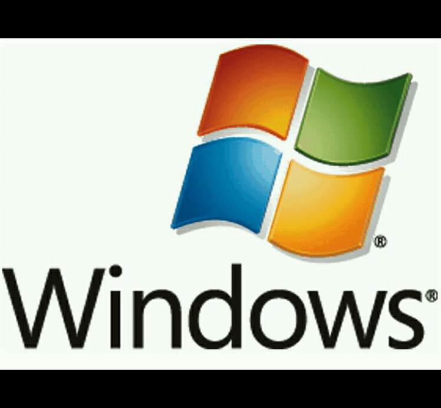

¿Qué es un Sistema Operativo?
Un sistema operativo es el software responsable de gestionar y coordinar el funcionamiento básico de diversas aplicaciones, hardware y demás recursos utilizados por el usuario en un ordenador, de allí que se destaque su importancia. El sistema operativo se encarga de realizar importantes y diferentes tareas como transmitir información entre los programas de aplicación, controlar el funcionamiento de los dispositivos periféricos (impresoras, teclados, etc.), evitar problemas de seguridad en ciertos programas, entre otros.
